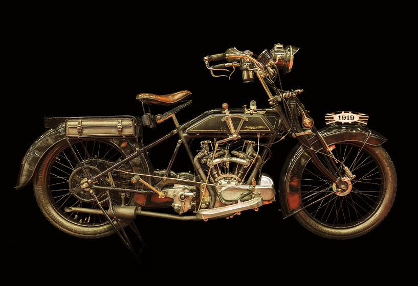

L'histoire de la Moto

Depuis son invention en 1868, la moto n’a cessé d’évoluer et de se
transformer, adoptant les formes et les usages les plus divers.
Voici les grandes étapes qui ont marqué l’histoire de cette
invention.
L’invention de la moto :
La moto a officiellement été inventée par l’ingénieur français
Louis-Guillaume Perreaux, qui a déposé le premier brevet d’un
vélocipède à grande vitesse en 1868. Ce brevet a été délivré sous le
numéro 83691 le 16 mars 1869 mais Perreaux a continué à améliorer
son invention jusqu’en 1885.
Ce premier modèle, ancêtre des motos actuelles, était équipé d’un
moteur à vapeur entraînant la roue arrière et de pédales agissant
sur la roue avant. En fait, ce prototype n’a jamais roulé de manière
autonome mais était fixé à un axe vertical et tournait en rond. Une
série d’inventions Il arrive parfois, lorsqu’une technique voit le
jour, que sa finalisation s’opère en plusieurs endroits à la même
période. L’invention de la moto, comme celle de l’avion, s’étend
ainsi sur près de trois décennies, entre la fin des années 1860 et
le début du XXème siècle.
Outre-Atlantique, certains témoignages attestent de l’existence en
1869 d’un véhicule à deux roues mû par un moteur à vapeur : la
Roper, qui était une attraction foraine. Les Américains s’attribuent
donc parfois la paternité de la motocyclette.
En 1885, l’ingénieur allemand Daimler apporte également sa
contribution à l’histoire des motos, avec une invention conçue afin
de tester un moteur à pétrole. Ce modèle, équipé de roues latérales
stabilisatrices (soit quatre roues au total), est considéré comme la
Première moto dotée d’un moteur à combustion interne.
Les premières motos :
La fabrication des premières motocyclettes a été rendue possible
grâce à une série d’innovations technologiques. En 1887, le Français
Félix Millet fabrique et commercialise quelques exemplaires d’une
moto équipée d’un moteur à pétrole de 5 cylindres en étoile placé
dans la roue arrière.
En 1894, l’Autrichien Hildebrand Wolfmuller lance des motos équipées
d’un bicylindre horizontal de 1490 cm³. Ce modèle bénéficie du
premier véritable réseau de vente de l’histoire de la moto.
En 1897, les frères Eugène et Michel Werner commercialisent, pour la
Première fois sous le nom de “motocyclette”, un cycle à moteur dont
le moteur est placé au-dessus de la roue avant.
Usages de la moto :
A ses débuts, la motocyclette n’était ni fiable ni confortable car
les suspensions étaient inexistantes.
Pourtant, l’usage de la moto s’est rapidement répandu comme un outil
de travail des professions libérales à la place du vélo. La Première
Guerre mondiale a également favorisé son utilisation à des fins
militaires.
Dans les années 1970, alors que la voiture se démocratise avec la
production de masse de véhicules Peugeot, Renault et Citroën, la
motocyclette connaît une certaine renaissance sous l’impulsion des
constructeurs japonais. Elle devient aussi un symbole de liberté et
de contestation dans le contexte de mai 68.